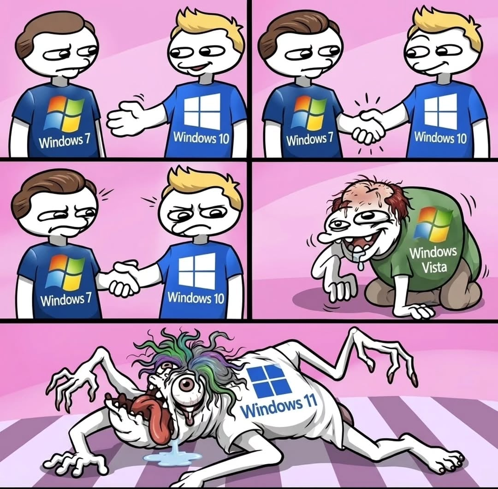

비스타(os구실은함) - 윈7(정상) - (데이터말소) - 윈10(정상) - 윈11(이하생략)
배경색이 파란 윈도우만 정상인듯함
문제는 이제 윈11을 최소 1년은 더써야됨
왜 4짤이냐고? 5번째컷은 현재진행형(유전자오염변종) 이거든

비스타(os구실은함) - 윈7(정상) - (데이터말소) - 윈10(정상) - 윈11(이하생략)
배경색이 파란 윈도우만 정상인듯함
문제는 이제 윈11을 최소 1년은 더써야됨
왜 4짤이냐고? 5번째컷은 현재진행형(유전자오염변종) 이거든
ㄹㅇ 진심 문제가 없어서 이거 잘 돌아가는 건가 싶을 정돈데..
비스타 정품을 가지고 있었는데도 xp를 쓰다가 7로 바로 넘어갔었지
윈11 쓰면서 느낀게 마소 얘들은 사용자편의성은 ㅈ도 신경안쓰는구나였음
힙스터마냥 불편하게 만듦
8.1은 양반이라 없네
이제 리눅스 붐은 온다 까다로운 게이머들도 많이 넘어가고 있다더라 개붕이들도 어서 넘어가자
뭐야 윈도2000 어디감?? 서버용이었지만 ME에 비하면 충분히 좋아서 잘썼는데..
비스타를 저렇게 취급하네
7씹새기야 니 애비여 ㅋㅋㅋ
윈7 -> 비스타 수정판
윈10 -> 윈8/8.1 수정판
내가 써온 윈도우들 레게노네
ME VISTA 7 10 11 시발 ㅋㅋㅋㅋ
이 씹극우 마가야로 만화가 만화 잘 퍼지네
7 = 비스타 sp3
비싼돈주고 쳐맞아가며 안정화해준 비스타 유료베타테스터 유저들 뒤통수치고 택갈이한 게 7이라 7 이것도 다른 이유로 씹새끼인데 ㅋㅋㅋ
그래서 윈도우 아예 안쓴지 꽤 됐는데 너무 만족중
7도 팔이 병1신이네...
업데이트 생기면 아묻따 업뎃 돌리는 과거 툴바 예스충같은 애들임